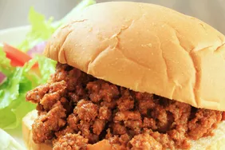

Sloppy Joe Recipe
Return to Homepage

Description
These crowd-pleasing Sloppy Joe sandwiches will take you back to your childhood!
This is my mom's recipe and it always gets compliments!
Ingredients
- 1 pound lean ground beef
- ¼ cup chopped onion
- ¼ cup chopped green bell pepper
- ¾ cup ketchup, or to taste
- 1 tablespoon brown sugar, or to taste
- 1 teaspoon yellow mustard, or to taste
- ½ teaspoon garlic powder
- salt and ground black pepper to taste
- 6 hamburger buns, split
Steps
-
Heat a large skillet over medium heat. Cook and stir lean ground beef in the hot skillet until some of the
fat starts to render, 3 to 4 minutes. Add onion and bell pepper; continue to cook until vegetables have
softened and beef is cooked through, 3 to 5 more minutes.
-
Stir in ketchup, brown sugar, mustard, and garlic powder; season with salt and pepper. Reduce heat to low
and simmer for 20 to 30 minutes.
-
Divide meat mixture evenly among hamburger buns.